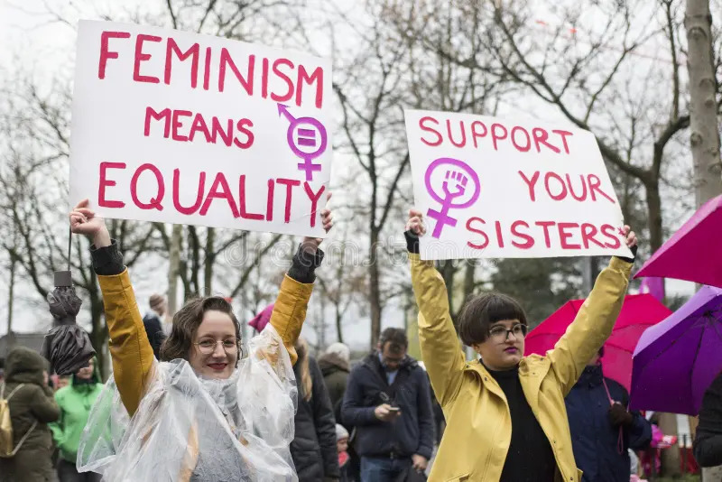

Gender roles are made, not born
"Gender roles kind of puts people in a box — and I think people should be able to choose their roles without being judged by their sex or gender."
Three key themes
Pressure & constraint
Her experience in the MSA shows how gender norms are enforced through social pressure, not formal rules. Marilyn Frye's birdcage metaphor applies: one wire alone seems harmless, but together the many barriers limit movement and choice. The interviewee describes a classic double bind — speaking up is read as improper, yet silence means accepting unfairness.
Resistance & possibility
Even while naming restrictions, she insists people should be free to choose roles in family, work, and relationships. This echoes Simone de Beauvoir's argument that woman is cast as the "Other," denied full subjecthood. Her hope also resonates with Judith Butler's claim that rigid gender systems limit what kinds of lives become livable — and that those norms can be challenged and reworked.
Scholars in conversation — click a card
Select a scholar above to see how their ideas connect to the interview.
Reflections
Religion as tool, not source
The interviewee did not frame religion itself as the main source of oppression. Instead she said people "misuse" terms like haya to silence women — showing that the issue is how power is exercised inside any institution, not the institution itself.

Agency within constraint
She made room for practical considerations in gendered career choices — some women choose caregiving fields because they want family balance. This complicates a simple victim narrative and shows how gender roles can be both constraining and strategically negotiated.

What worked
Moving from broad ideas to specific examples produced more reflective answers. Short quotes — "more demure," "go with what the guys want," "puts people in a box" — capture the participant's perspective in her own language and anchor the analysis.

Productive difficulty
Some questions were very broad, requiring careful qualification. That difficulty was productive: it revealed that gender roles are tied to power, speech, religion, work, and identity in ways that shape everyday life — not just expectations for men and women.
Works cited
Beauvoir, Simone de. "Introduction." The Second Sex, translated by H. M. Parshley, Vintage Books, 1949.
Butler, Judith. "Why Is the Backlash Against 'Gender Ideology' So Intense?" The Guardian, 23 Oct. 2021.
Frye, Marilyn. "Oppression." The Politics of Reality: Essays in Feminist Theory, Crossing Press, 1983.
Lorber, Judith. "The Social Construction of Gender." Paradoxes of Gender, Yale UP, 1994.
Valentine, Alex. "Why Sex Is Not Binary." The New York Times, 25 Oct. 2018.